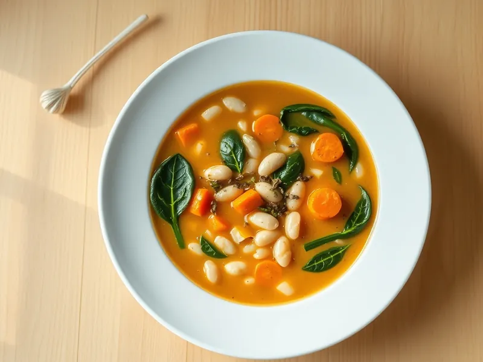

Фото: Иллюстрация ИИ, Cloudflare Workers AI
Суп с белой фасолью и шпинатом
Сытный постный суп из консервированной фасоли с морковью, томатом и шпинатом
25 мин4 порц.289 ккал на порциюБ 15 · Ж 7 · У 42Средиземноморская кухня
Продукты на 4 порц.
- Фасоль консервированная2 шт
- Лук репчатый1 шт
- Морковь1 шт
- Чеснок2 зуб.
- Томатная паста1 ст. л.
- Оливковое масло2 ст. л.
- Шпинат100 г
- Вода900 мл
- Сушёные травы1 ч. л.
- Соль1 ч. л.
Как готовить
- Нарежьте лук и морковь мелкими кубиками, чеснок пластинками. Слейте жидкость с фасоли и промойте её.
- Обжарьте лук и морковь в оливковом масле на среднем огне 5 минут до мягкости, добавьте чеснок и томатную пасту, жарьте ещё 1 минуту.
- Влейте воду, добавьте фасоль, сушёные травы и соль. Варите после закипания 10 минут на слабом огне.
- Возьмите половник фасоли с бульоном, разомните вилкой и верните в кастрюлю, чтобы суп стал гуще.
- Добавьте шпинат и варите 2 минуты, пока листья не опадут. Снимите с огня и дайте постоять 3 минуты.
Совет. Фасоль в собственном соку лучше, чем в томате: вкус чище. Суп хорошо хранится 2 дня в холодильнике и на второй день становится только вкуснее.